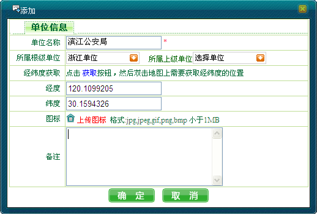
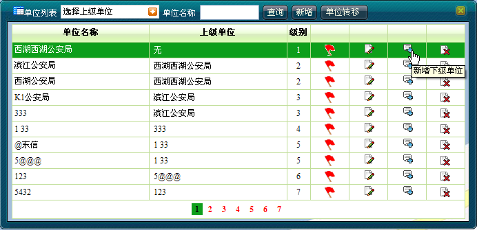

必须是一级配置员才能成功添加单位信息，分级配置员无增加单位信息的权限。
 增加单位操作步骤如下：
增加单位操作步骤如下：
1）单击［基础信息/单位信息维护］，弹出单位列表。
2）单击＜新增＞，弹出“添加”单位信息对话框，用户输入新增单位的信息，如下图所示。
3）单击＜确定＞完成操作。如果添加成功，系统将向用户提示添加成功信息；如果添加失败，则向用户提示错误原因。

添加单位信息
 说明：
说明：
若用户输入的单位信息出现以下情况，系统将提示添加单位失败：
输入单位名称和已存在单位重复；
经纬度和已存在的单位经纬度完全相同，或者超过地图经纬度范围；
上传的图标不符合文件格式；0KB的文件；超过临界大小的文件；异常修改文件后缀的文件（修改成符合文件后缀格式）。
 新增下级单位操作步骤如下：
新增下级单位操作步骤如下：
1）单击［基础信息/单位信息维护］，弹出单位列表。

新增下级单位信息
2）在需添加下级单位的单位信息右侧单击＜新增下级单位＞，弹出“添加”单位信息对话框，用户输入新增单位的信息。
3）单击＜确定＞完成操作。
Copyright © 2012 Eastcom, Inc. All rights reserved. |
||